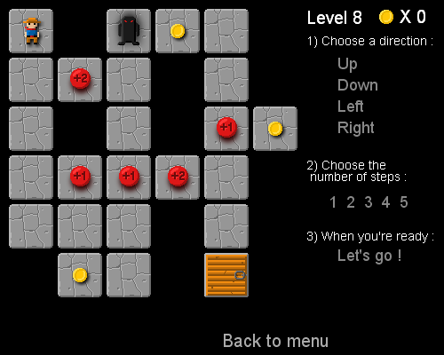
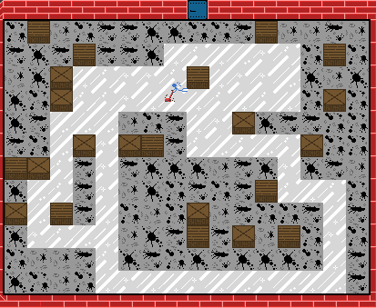
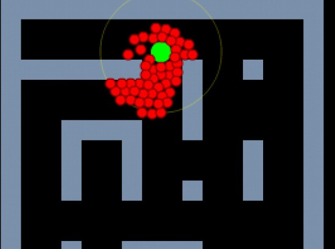
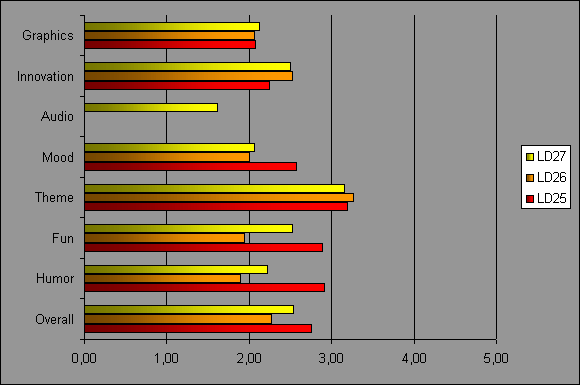

Compte-rendu de Ludum Dare #27
Me revoici, pour vous présenter le compte-rendu de la 27ème édition du Ludum Dare qui s’est déroulé du 24 au 26 août. N’ayant rien présenté lors de la 26ème édition, je compte rattraper mon retard et faire d’une pierre deux coups. Si vous avez déjà lu les précédents articles sur le même thème, vous devriez déjà savoir qu’il s'agit d'un week-end pendant lequel des développeurs du monde entier créent des jeux sur un thème imposé. Les participations peuvent se faire soit en 48 heures en solo (la compétition ou compo), soit en groupe en 72 heures (le jam).
C’est donc ma troisième participation à cet évènement si particulier et je commence à me sentir bien plus à l’aise dans la programmation d’un jeu que la première fois. Si mon premier jeu était uniquement basé sur du code Javascript pur et dur mêlé à du Canvas, les deux derniers ont été faits avec EaselJS, un langage dont l’API se rapproche du Flash. Mais même si je commence à comprendre les subtilités du langage, les jeux que j'ai créés ne sont pas forcément meilleurs.
Quatre mois plus tôt.
Avant le début du Ludum Dare, les développeurs souhaitant participer peuvent proposer leur propre thème. Ces thèmes sont ensuite répartis en plusieurs « rounds » et sont soumis aux votes de la communauté. Les meilleurs thèmes sont retenus pour le « final round » et c'est le meilleur d'entre eux qui sera LE thème de la session. Et celui du 27 au 29 avril était : « Minimalism ». Aïe, aïe, aïe ! Si le thème précédent « You are the vilain » était assez parlant, celui-ci en revanche a donné beaucoup de fil à retordre.
Rien que trouver une idée de jeu basé sur le thème « Minimalism » est une épreuve en soi, et je ne suis pas le seul à être resté bloqué pendant plusieurs heures là-dessus. Un peu plus tard, j'apprends que le thème du LD 11 était « Minimalist », une subtile différence qui change un adjectif en nom qui désigne entre autres un mouvement artistique. Ce n'est pas grand chose, mais au moins, c'est une piste. De mon côté, mon dictionnaire m'a un peu aidé : « Recherche de solutions requérant le minimum de moyens et d'efforts ».
Autrement dit, j'étais parti dans l'idée de créer un jeu où le joueur aurait à sa disposition un minimum de moyens pour pouvoir atteindre son objectif. Je me suis souvenu d'un vieux logiciel ludo-éducatif où il fallait saisir au clavier la direction et le nombre de pas que devait effectuer le héros pour atteindre la sortie tout en évitant de tomber dans l'eau. Ce jeu éducatif avait la particularité d'apprendre à compter et à développer le sens de l'orientation.
Hop ! Je sors mes outils habituels, plus une nouvelle bibliothèque Javascript qui permet une utilisation simplifiée de la balise HTML5 canvas : EaselJS. Si vous souhaitez en savoir plus, je vous recommande de lire ce document pdf. Pour faire court, EaselJS contient des méthodes pour afficher des images, créer des animations, gérer les sprites, gérer les contrôles du clavier et de la souris, dessiner, etc.
En un mot comme en cent, voici mon jeu dans sa version finale Skip on Slabs :

La première version était simple et… plutôt pauvre, vous pouvez l'essayer ici. Bien qu'il n'y ait pas de texture, le jeu est néanmoins jouable. Plutôt que de faire saisir du texte au joueur pour contrôler le petit bonhomme, j'ai opté pour un choix d'options que le joueur peut sélectionner. Mais malheureusement, ceci n'a pas eu l'effet escompté. Alors que je me proposais de faire un jeu où l'on pourrait faire beaucoup de chose avec un minimum d'actions, j'ai en fait créé un jeu qui nécessitait de faire beaucoup d'actions pour obtenir une seule chose à la fois. Les critiques que j'ai reçues se résument à ceci : « Le gameplay est trop simple et les commandes sont laborieuses, j'aurais aimé pouvoir enchaîner les actions à la suite en un clic et ça manque de challenge. Mais l'idée est sympa et le thème semble plutôt bien respecté. »
En fait, j'avais aussi eu l'idée de rendre le jeu plus difficile en mettant des pièges, et même d'ajouter un monstre qui « poursuit » le héros. Mais je n'avais pas eu le temps d'implémenter tout ça pendant le Ludun Dare, j'ai donc continué à programmer mon jeu pendant les deux mois qui ont suivi pour qu'il ait un peu plus d'allure et un challenge un peu plus relevé. Et voici le résultat final.
Pourquoi deux mois ? Si les pièges étaient simples à programmer, le monstre en revanche était… monstrueux. Sans m'en rendre compte, je suis entré dans une des parties les plus difficiles de la conception d'un jeu vidéo : l'Intelligence Artificielle.
Sans entrer dans les détails, il m'a fallu comprendre le système du « pathfinding » (ou « recherche de chemin » en français), afin de faire comprendre au monstre qu'il ne doit pas plonger bêtement dans l'eau ou rester coincé sur place si le héros se trouve sur le même axe vertical ou horizontal. Et encore, il fallait impérativement que je relance mon algorithme de « traçage » à chaque action car le héros lui-même changeait de position.
Au final, mon jeu, bien que jouable et proposant un challenge correct, reste compliqué à contrôler. De tous les jeux que j'ai créé, celui-ci est le plus élaboré, mais c'est celui qui a reçu les pires notes. Comme quoi, à vouloir trop chercher, on finit par obtenir quelque chose qui ne plait pas forcément.
Le Ludum Dare du mois d'août.
Roulement de tambour, le thème de la 27ème édition eeeeeest : 10 seconds. Quoi qu'on ait pu dire sur les canaux IRC, une chose était certaine : tant qu'un timer est intégré dans le jeu, le thème est un minimum respecté. Mais tout de même, créer un jeu où le temps serait limité à 10 secondes ne rendrait-il pas le jeu trop court justement ? De toute façon, les jeux du Ludum Dare sont souvent courts et les plus longs ne dépassent parfois pas les dix minutes. Mais comment maintenir le joueur en haleine ? Heureusement, au Ludum Dare, il y a toujours des points de vue différents pour interpréter le thème, c'est ce qui permet d'obtenir des jeux originaux avec un système de rejouabilité.

À la base, je voulais partir sur un jeu de plates-formes où le héros devait franchir des portails temporels qui ralentiraient le décompte du temps restant (les dixièmes de secondes qui deviennent des secondes, par exemple). C'était ma première idée et elle me plaisait… jusqu'à ce que je réalise que je n'avais jamais codé de système de collisions dans un jeu de plates-formes. J'ai essayé, mais après coup, je me suis dit que ça prendrait trop de temps et qu'il aurait fallu créer un moteur (ou en trouver un et le comprendre) avant le concours.
Même si je m'étais familiarisé avec la bibliothèque EaselJS, je n'avais pas à proprement parlé de « moteur » de jeu. L'avantage d'avoir un moteur permet d'éviter de recréer depuis le début le code de base afin de se concentrer sur le contenu et le déroulement du jeu plutôt que la résolution de problèmes de programmation. Mais si je devais citer un inconvénient du moteur, je dirais qu'il est spécifique à un genre de jeu, ou plutôt, à une « architecture ». Par exemple, le moteur de jeu créé et utilisé par Deepnight lors des trois précédentes sessions du Ludum Dare ressemble à ceci :

Finalement, j'ai dû créer mon propre système de collisions, un cauchemar à programmer ! Bien qu'il y ait encore quelques bugs mineurs à certains moments, je suis plutôt fier de mon système. Mais j'ai perdu du temps et même si ce n'était que le samedi, je me suis dit qu'il ne serait pas au point avant la deadline. Alors, j'ai laissé tomber l'idée de base et je suis parti sur quelque chose de plus simple : un gars qui doit nettoyer une salle avec une cireuse folle. Et pour que les niveaux ne se ressemblent pas, j'ai ajouté des caisses qui sont répartis aléatoirement.
Vous pouvez y jouer ici.
Pour la première fois, j'ai réussi à intégrer du son. Comme je mettais en scène une cireuse, je me suis dit qu'un bruit d'aspirateur ferait l'affaire, alors je me suis rendu sur Universal-soundbank pour trouver mon bonheur. Ensuite, en jeu, la cireuse avait deux états : soit elle est au repos, soit elle glisse à toute vitesse. Pour cela, j'ai utilisé le logiciel Audacity, que je connaissais déjà depuis un petit moment et qui est simple d'utilisation. Il m'a permis de sélectionner une partie de la bande-son d'origine et de modifier l'intonation (une partie grave et une autre plus aigüe). Mais en fin de compte, je l'ai clairement mal exploitée dans mon code, je l'avoue. Entendre le bruit de la cireuse qui s'entrecoupe à chaque mouvement devient vite agaçant. D'autre part, en raison de bugs de collisions, le héros se retrouve parfois coincé dans les caisses pendant de précieuses secondes… ce qui crée par ailleurs une mini boucle qui fait que le son se retrouve anormalement amplifié pendant une fraction de seconde.
Dans les commentaires, on m'a dit que c'était très difficile de réussir à nettoyer toute la pièce. Je vais vous faire un aveu : techniquement, c'est impossible. Car rien que nettoyer une ligne prend environ 2,5 secondes, et il y en a 12 en tout. Faites le calcul, en 10 secondes, il n'y a clairement pas le temps pour « finir » un niveau. Du coup, on m'a conseillé d'intégrer un système de classement afin de déterminer qui aurait réussi à nettoyer le plus de cases possible. Je ne l'ai pas fait, et ce pour 3 raisons :
-
Les caisses sont générées aléatoirement à des endroits différents mais également en nombre. Ce qui signifie que le meilleur score serait basé sur… la chance. Bien entendu, par convention, le meilleur score s'obtient en fonction de la chance du joueur (ou de sa prouesse technique exceptionnelle), mais là, c'est le système de génération aléatoire qui définit le score à l'avance. De plus, il y a un maximum de 192 cases. Il n'y a donc pas assez de marge pour que le classement ait un réel intérêt.
-
Techniquement, il est impossible de tout nettoyer. Du coup, en optimisant le chemin à prendre, les joueurs finiront par tous obtenir le même score maximum.
-
Je n'avais tout simplement plus le temps.
Un dernier point, et non des moindres : au Ludum Dare, les développeurs testent des dizaines, voire des centaines de jeux. Au total, à chaque session, il y en a un peu plus de 2000. Pour qu'un jeu soit apprécié, il est quasi-indispensable de simplifier au mieux les commandes. Contrairement à ma précédente participation, c'est ce que j'ai fait : les touches à utiliser en jeu sont simplement les touches directionnelles.
Verdict et résultats.
Globalement, créer un jeu peut sembler compliqué au premier abord, mais une fois lancé, c'est la motivation qui prend le dessus. Et je pense que si les critères et le thème n'étaient pas imposés, on partirait dans tous les sens, non seulement sur le plan de la programmation mais aussi sur le plan des idées. Le temps passé sur les différentes tâches dépend de la façon de travailler de chacun, mais dans l'ensemble, je crois pouvoir affirmer que c'est surtout la programmation qui prend le plus de temps, approximativement, 15 à 20 heures. Pour mes dessins, je fais tout moi-même en pixel art, pour cela, il faut compter 3 à 5 heures. Pour le son, il ne m'a fallu qu'une petite heure (et vu le peu que j'ai réalisé rendait assez mal, je n'ai pas insisté plus que ça). Ah ! Et il faut aussi compter le temps de réflexion à partir du moment où on a pris connaissance du thème (Pour le LD 27, je dirais 2 heures. Et pour celui du LD 26… 5 heures). Pour finir, et s'il reste un peu de temps, il peut servir à la correction de bugs et à l'ajustement du gameplay après avoir fait tester le jeu à ses amis ; là en revanche, tout dépend du temps qu'il reste et du nombre de problèmes à résoudre.
Malgré les difficultés rencontrées, j'ai réussi à créer des jeux jouables et qui tiennent la route (et j'en suis fier). Je me suis amusé à faire un histogramme de mes performances (notées sur 5) :

Dans l'ensemble, j'ai toujours bien respecté les thèmes tandis que le reste atteint péniblement la moyenne. Mes plus grandes faiblesses sont les graphismes et l'audio, et ma meilleur catégorie par rapport au classement général, c'est l'humour.
C'est tout pour aujourd'hui ! Si vous le souhaitez, vous pouvez jouer aux top 100 des meilleurs jeux du LD27, dans la catégorie compo et la catégorie jam.